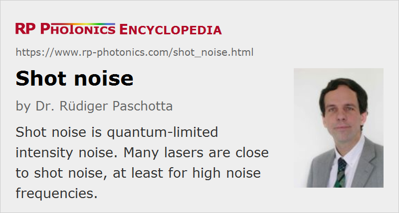

Shot Noise
Definition: quantum-limited intensity noise
More general term: quantum noise
German: Schrotrauschen
Categories: quantum optics, fluctuations and noise
How to cite the article; suggest additional literature
Author: Dr. Rüdiger Paschotta
A fundamental limit to the optical intensity noise as observed in many situations (e.g. in measurements with a photodiode or a CCD image sensor) is given by shot noise. This is a quantum noise effect, related to the discreteness of photons and electrons. Originally, it was interpreted as arising from the random occurrence of photon absorption events in a photodetector, i.e. not as noise in the light field itself. Intensity noise at the shot noise level is obtained when the probability for an absorption event per unit time is constant and not correlated with former events. However, the existence of amplitude-squeezed light, which exhibits intensity noise below the shot noise level (sub-Poissonian intensity noise), proves that shot noise must be interpreted as a property of the light field itself, rather than as an issue of photodetection only – although a photodetector may be blamed for shot noise if it requires optical attenuation, which raises the shot noise level of the relative intensity (→ relative intensity noise).
Intensity noise at the shot noise level is obtained e.g. for a so-called coherent state, which may be approximated by the output of a laser at high noise frequencies. At lower noise frequencies, laser noise is normally much higher due to relaxation oscillations, mode hopping, excess pump noise, and other phenomena. The intensity noise of a simple incandescent lamp is fairly close to the shot noise level. Noise below the shot noise level is obtained for amplitude-squeezed light, which can be obtained e.g. by transforming an original coherent state with the help of nonlinear interactions.
Linear absorption of light also pulls the noise level closer to the shot noise level. Therefore, the noise registered with a photodetector having a low quantum efficiency may be close to shot noise even if the incident light is well below the shot noise level.
Note also that background light often introduces not only just a constant addition to an actual signal, but also the corresponding shot noise. That makes it more difficult, for example, to detect a weak signal if the detector is at the same time affected by substantially more intense sunlight.
Measurements at the Shot Noise Level
Photodetectors with high quantum efficiency and appropriate electronic circuitry are required for obtaining sub-shot noise sensitivity of intensity noise measurements. A common configuration is that of a balanced homodyne detector (Figure 1) containing two photodetectors, where a beam splitter sends 50% of the optical power to each detector, and the sum and difference of the photocurrents are obtained electronically. Whereas the sum of the photocurrents is the same as for using all light on a single detector, the difference signal provides a reference for the shot noise level. The article on optical heterodyne detection gives more details.
A severe challenge can come from thermal noise in the electronics, particularly when the photocurrent is converted to a voltage in a small resistor, as is often required for achieving a high detection bandwidth. Also, the full optical power needs to be detected, i.e. the measurement cannot be done on an attenuated beam. Otherwise, the optical attenuation adds additional quantum noise. (The finite quantum efficiency of the detector has the same kind of effect.) If the full optical power is too high for a single detector, a possible method is to use beam splitters for distributing the power on several photodetectors, and to combine the photocurrents.
Sub-shot-noise Electric Currents and Optical Noise
Note that an electric current with noise below the shot noise level can be obtained very easily, e.g. by connecting a quiet voltage source to a resistor. The reason for this is that electrons, being equally charged particles, experience a mutual repulsion, which gives them a natural tendency to “line up”, i.e. to pass a conductor with more regular than just random distances between them.
Efficient laser diodes, operated at low temperatures, can convert sub-shot-noise electric currents into light with intensity noise below the shot noise level (→ amplitude-squeezed light). Surprisingly, the degree of squeezing is not even limited by the quantum efficiency of the laser diode.
Various optical nonlinearities can be used to generate light with quantum noise below the shot noise limit. This can be squeezed light, where one quadrature component is below the shot noise level, or light exhibiting certain quantum correlations.
Important Equations
The one-sided power spectral density of the optical power in the case of shot noise is
which is proportional to the average power and the photon energy hν, and is independent of the noise frequency (i.e., shot noise is “white noise”). As the power of a modulation signal with a given relative modulation amplitude scales with the square of the average power, the relative intensity noise decreases with increasing optical power. In the formula for the power spectral density of the relative intensity noise at the shot noise limit, one would divide by the average power, rather than multiplying with it.
An often quoted equation for the shot noise in an electric current is
where e is the elementary charge. This formula indicates the variance of the current for an average current I and a measurement bandwidth Δf. The equation corresponds to a one-sided power spectral density
of the photocurrent.
Questions and Comments from Users
Here you can submit questions and comments. As far as they get accepted by the author, they will appear above this paragraph together with the author’s answer. The author will decide on acceptance based on certain criteria. Essentially, the issue must be of sufficiently broad interest.
Please do not enter personal data here; we would otherwise delete it soon. (See also our privacy declaration.) If you wish to receive personal feedback or consultancy from the author, please contact him e.g. via e-mail.
By submitting the information, you give your consent to the potential publication of your inputs on our website according to our rules. (If you later retract your consent, we will delete those inputs.) As your inputs are first reviewed by the author, they may be published with some delay.
Bibliography
| [1] | N. Campbell, “The study of discontinuous phenomena”, Proc. Cambr. Phil. Soc. 15, 117 (1909) |
| [2] | W. Schottky, “Über spontane Stromschwankungen in verschiedenen Elektrizitätsleitern”, Ann. Physik 57, 541 (1918), doi:10.1002/andp.19183622304 |
| [3] | E. N. Gilbert and H. O. Pollak, “Amplitude distribution of shot noise”, Bell Syst. Tech. J. 39, 333 (1960), doi:10.1002/j.1538-7305.1960.tb01603.x |
| [4] | C. M. Caves, “Quantum limits on noise in linear amplifiers”, Phys. Rev. D 26 (8), 1817 (1982), doi:10.1103/PhysRevD.26.1817 |
| [5] | H. P. Yuen and V. W. S. Chan, “Noise in homodyne and heterodyne detection”, Opt. Lett. 8 (3), 177 (1983), doi:10.1364/OL.8.000177 |
| [6] | W. H. Richardson et al., “Squeezed photon-number noise and sub-Poissonian electrical partition noise in a semiconductor laser”, Phys. Rev. Lett. 66 (22), 2867 (1991), doi:10.1103/PhysRevLett.66.2867 |
| [7] | G. Brida et al., “Experimental realization of sub-shot-noise quantum imaging”, Nature Photon. 4, 227 (2010), doi:10.1038/nphoton.2010.29 |
See also: intensity noise, relative intensity noise, quantum noise, photodetectors, optical heterodyne detection, coherent states, standard quantum limit, photons, squeezed states of light, The Photonics Spotlight 2007-04-16, The Photonics Spotlight 2009-11-13
and other articles in the categories quantum optics, fluctuations and noise
|  |
If you like this page, please share the link with your friends and colleagues, e.g. via social media: 


These sharing buttons are implemented in a privacy-friendly way! |
2020-05-25
Is the here mentioned power spectral density the frequency noise power spectral density, and if not (I guess so since the unit here is not Hz2/Hz) how can this be computed for shot noise?
Answer from the author:
By definition, shot noise is noise of the optical power, not of the frequency. Therefore, strictly speaking your question is meaningless.
However, such questions are often meant in a different sense: how large is the phase noise or frequency noise for a coherent state? (Such a state exhibits shot noise of the optical power, and some well defined level of phase noise and frequency noise.) Unfortunately, I do not have the time to dig out that equation – maybe someone else can help?